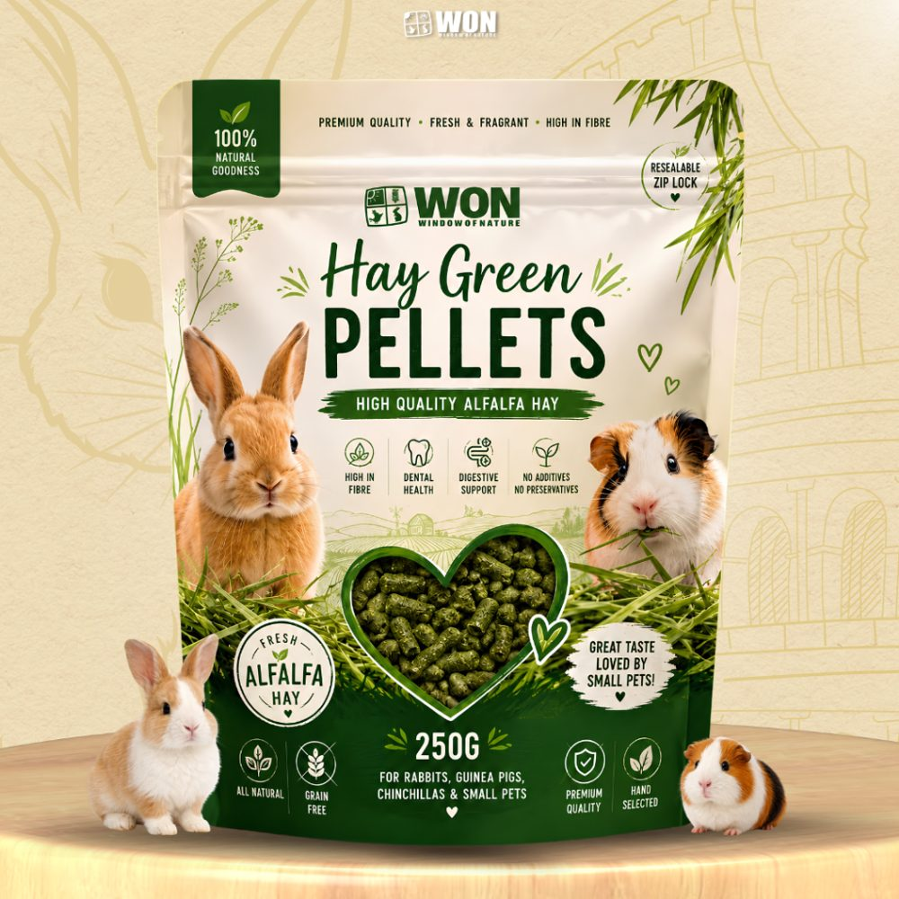

05 / Green Hay PelletsNature, in
Nature, in
a smaller form.
Alfalfa hay in a practical pellet format. Green Hay Pellets pair easy portioning with a resealable 250 g pouch for small-animal feeding routines.
WON / The collection

250 gNet weight
AlfalfaHay-based pellets
ResealableZip closure
CompactEasy to portion

Convenience, consideredThe alfalfa you know.
The alfalfa you know.
A format to fit.
A compact way to offer alfalfa, with a zip closure that makes the pouch easy to store between feeds. The declared 250 g is the product’s net weight.
Pellets and long-stem hay have different roles. For rabbits and guinea pigs, plan their use alongside suitable hay and the animal’s wider diet.
A conversation starts hereA thoughtful addition
A thoughtful addition
to feeding time.
Order the 250 g pouch or speak with us about the Green Hay Pellets range.